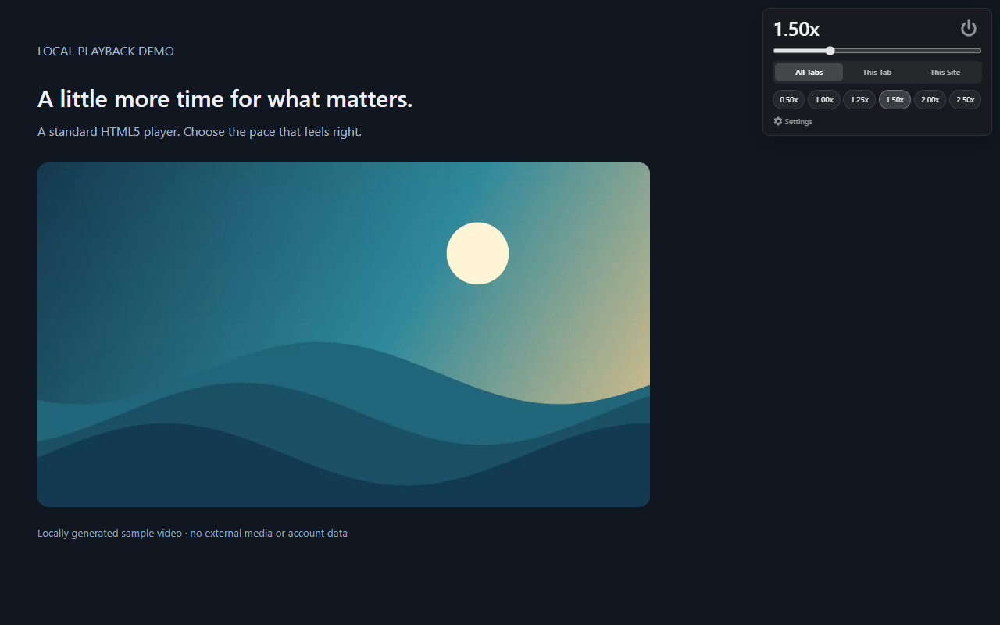

Rapidplay
Video and audio at your pace.
Playback speed, within reach
Control standard HTML5 video and audio from 0.25× to 5.00×. Open the panel with the toolbar icon or Alt + X once media has been detected. Use the slider, presets, or customizable shortcuts. Choose All Tabs, This Tab, or This Site.
The toolbar can also open settings before media is present. Adjust step size, shortcuts, presets, opacity, and hue. Pitch preservation is enabled where the browser supports it.

Local settings and session speeds
Shortcuts, presets, appearance, and the power button’s on/off choice stay in Chrome’s local extension storage. Speeds and site overrides last for the browser session. Tab overrides are cleared on ordinary reloads and expire after approximately 30 minutes of inactivity, checked when the extension next handles state.
The power button pauses Rapidplay across tabs and returns tracked media to 1×. While paused, media discovery and playback control stop. The toolbar still opens the settings panel.
Minimal API permissions
Rapidplay requests one API permission: storage. Its packaged content scripts also require access to ordinary HTTP/HTTPS pages to detect and control media, including supported embedded frames. Chrome may display a broad website-access warning. Spotify is excluded.
No account, analytics, remote code, or developer backend. Settings and session hostnames are not sent to the developer. See the Privacy Policy.
Availability and support
Prepared for Chrome Web Store submission; a store installation link will be added after approval. Requires Chrome 111 or later. Chrome internal pages, the Chrome Web Store, Spotify, and unsupported players cannot be controlled; some players enforce their own rate limits.